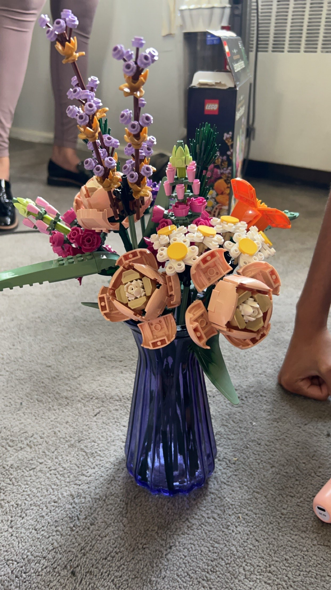

Welcome to the Digital Garden

Image source: Original photo by Mariah Bee
Our Theme: Legendary Video Game Flora
This website explores the beauty and technical specifications of iconic flowers from the world of gaming (and Spongebob). From the glowing fields of Hyrule to the pixelated biomes of Minecraft, we examine how different digital formats bring these botanical legends to life on our screens.
Exploring Image Formats
As part of the Visual Media Lab, each page in this collection showcases a specific image format; JPG, PNG, or GIF. By clicking through the navigation buttons at the top of the screen, you can see how file types are chosen based on their ability to handle gradients, transparency, or simple animations.